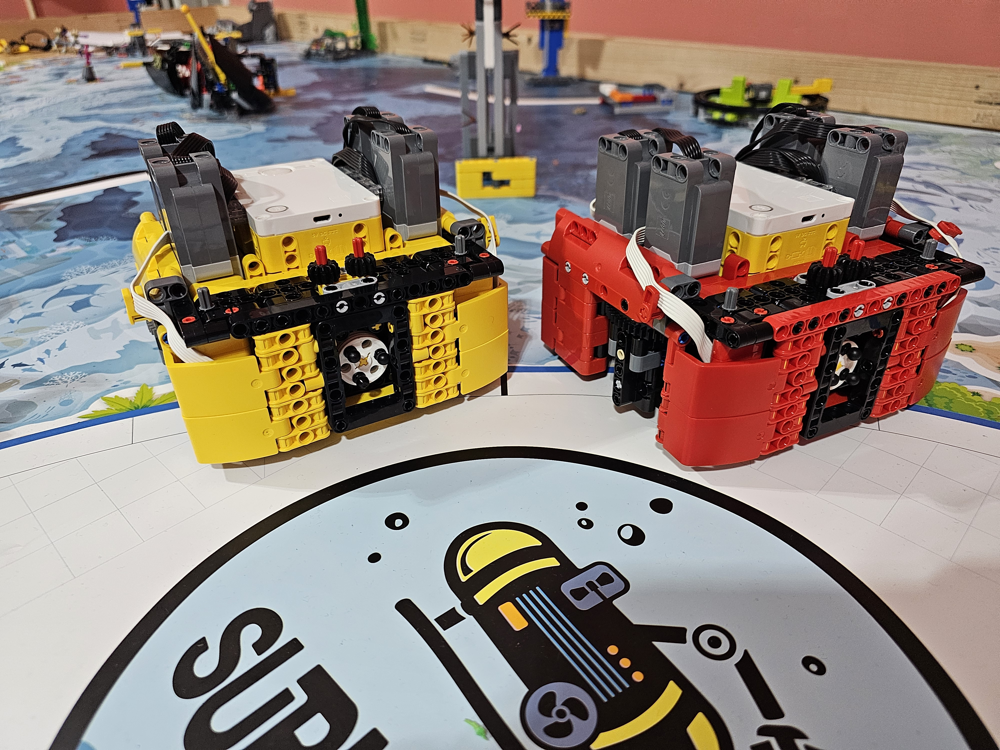

First LEGO League
First LEGO League, also known as FLL, is a competition where teams design and build a robot to solve missions on a game board. Your team also has to identify a problem that needs to be solved and come up with a solution that fits the theme of the competition. For example, in the 2022 season, the theme was "Superpowered," where the game board featured different energy sources that we had to deliver to different areas, and where we had to research an energy-related problem and come up with a solution. I have been in FLL for 4 years, and it has been an amazing experience.
Year 1: 2022-2023
I joined in the middle of the year and was able to learn the basics of robotics and teamwork. I got used to the different pieces and how they connect together, as well as the coding environment. We used block coding, which was a great way to get started with programming. The theme for this year was "Superpowered," which was about different energy sources and their applications. We figured out that most of our sources of electricity rely on inconsistent energy sources. So my team and I worked together to create an innovative solution. Our solution was to generate more energy when the source was available and store it for when demand was greater than what the inconsistent sources could provide. There is a diagram and a video of the model solution below.

I am on the far left of the image

Diagram of solution
We made it to the regional competition for the first time!
Year 2: 2023-2024
In my second year, I improved my skills in programming and design. We worked on a new theme for the competition and created a better robot by looking at the problems with our old one and solving them. This year's theme was "Masterpiece," which was about different forms of art and technology. We looked at different problems related to this theme and figured out that many people were not aware of the hobbies that everyone liked to do, and most of us did not use social media platforms, making it harder to share our interests with other people. So my team and I created a solution called "Hey, Hobby," which is an app that connects people with similar hobbies and interests. A video is shown below. We also made another robot with a huge improvement to our previous one, turning it from a differential robot into a swerve robot. This allowed us to move in any direction without having to turn the robot, which made it much faster and more efficient. We also improved our coding skills by learning how to use PID control, which allowed us to make our robot more accurate and consistent. A picture of our robot is shown below. Because this concept was new to us, we continued to use our old robot for the competition, but we plan to use our new robot in the next season.

We made it to regionals again!


Year 3: 2024-2025
In my third year, I focused more on the coding and building side of the competition rather than on the innovation solution. This year's theme was "Submerged," which was about underwater exploration and marine life. At the start of the season, we made three different groups to work on the robot, the innovation solution, and the presentation. We regularly met to discuss our progress and make adjustments to our approach, and we rotated the people in our groups to ensure everyone had a chance to work on different aspects of the project. Toward the end, we all settled into our roles and worked together effectively. We returned to our previous swerve drive robot and made huge improvements to its code and design. Pictures of our work are shown below. For our innovation solution, we figured out that marine research is expensive and logistically challenging. It is also risky, physically and mentally demanding, making research collaborations harder. Taking inspiration from CubeSats, which are small, low-cost satellites used for scientific research and technology development, we aimed to create a similar solution for marine research. So we created the ARP, or the Aqua Research Platform. This innovation lets people research the ocean easily and for a low cost. With our prototype, people could put whatever pieces of technology they wanted to use to research the ocean and put them into the ARP. Then we would put the capsules into the ocean where they wanted them dropped. The ARP does not harm marine life.

Two of our Swerve robots!

A prototype of our innovation solution
Year 4: 2025-2026
In my fourth year, I took on a more leadership role and helped mentor newer members.